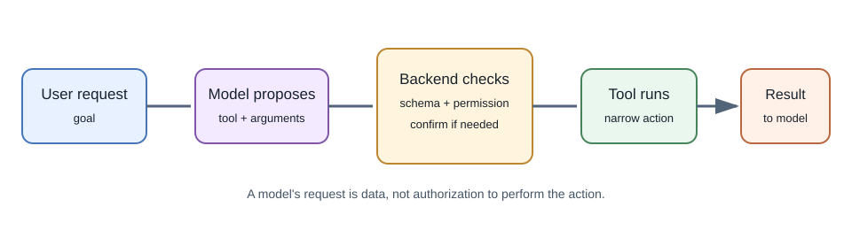
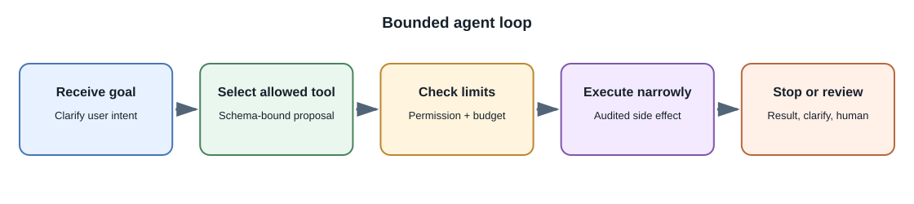

Tool Calling and AI Agents¶
Introduction¶
Tool calling lets a model request that an application run a named operation with structured arguments. The model does not directly execute the operation; the surrounding application receives the request, validates it, decides whether it is allowed, and returns a result.
An agent is a system that uses a model to choose or sequence actions toward a goal, often in a loop of planning, tool calls, observations, and further decisions. The term is used broadly, so describe the actual workflow rather than relying on the label.
Why use tools?¶
A language model alone cannot reliably read a live account balance, query a private database, send an email, or calculate an exact value. Tools connect the model to controlled application capabilities and current information.
How an assistant can fetch a browser URL¶
A model does not automatically open a browser or fetch arbitrary URLs. A product can provide a controlled browsing tool or retrieval service. The model may request that tool; the application or a dedicated fetcher makes the network request and returns selected content to the model.
A safe, simplified flow is:
- The user asks about a page or provides a URL.
- The backend validates the URL and checks that fetching it is permitted.
- A restricted fetcher requests the page, follows an allowed redirect policy, and extracts bounded text or metadata.
- The application returns the fetched result and its URL to the model as untrusted context.
- The answer can link to the fetched page, while the UI distinguishes fetched source content from the model's explanation.
Some products instead use a search provider or an isolated browser service; others have no browsing capability at all. The configured tool and provider documentation determine what is actually possible. A URL in a prompt by itself is not evidence that the page was visited or is current.
There is also a difference between fetching a page and operating a browser. A basic fetcher requests a URL and extracts a response; it may not see content that only appears after JavaScript runs or after a user signs in. An isolated browser can render interactive pages, but it introduces more powerful capabilities and risks. Do not reuse a user's browser session or send credentials to a page unless the product explicitly requires it and has a secure, consent-based design.
Fetching user-supplied URLs creates server-side request forgery (SSRF) and content risks. Block loopback, private, link-local, and otherwise disallowed network destinations; re-check every redirect and resolved address; limit response size and time; restrict schemes; and avoid sending cookies or internal credentials. Do not treat page instructions as trusted system instructions. For many applications, a vetted search or document connector is safer than an unrestricted URL-fetch tool.
Tool-calling flow¶


- The application provides the model with a bounded list of tools and their input schemas.
- The model may return a tool-call request instead of a final response.
- The backend validates the tool name, arguments, user identity, and authorization.
- The backend runs only the approved operation and returns a limited result.
- The model may use that result to form a response or request another allowed step.
- The application enforces a maximum number of steps and a time or cost budget.
Example: order status¶
The model may request get_order_status({orderId: "..."}). The backend
must check that the authenticated user owns that order before querying it.
The model's possession of an order ID is not authorization. Return only the
necessary status fields, not the full customer record.
Keep tools narrow and safe¶
- Use specific operations such as
get_my_recent_orders, not an unrestrictedrun_sqlor shell command. - Validate arguments against a schema and reject unknown fields.
- Derive user identity and tenant scope from the authenticated server context, not model-generated arguments.
- Apply rate limits, timeouts, and result-size bounds.
- Make writes idempotent where possible and require user confirmation for meaningful external actions.
- Record an audit trail without storing secrets or excessive personal data.
- Treat tool results and retrieved content as untrusted input.
Never let a model generate code that your server blindly executes with broad permissions. Put the operation behind a small, reviewed application function.
Agent loop and stopping¶
A simple agent loop has a request, model decision, tool execution, tool result, and another model decision. It should have explicit stopping conditions: a final answer, a maximum step count, a timeout, a permission failure, or a required human approval. Without bounds, loops can consume cost, repeat actions, or fail to make progress.
For multi-step work, store workflow state explicitly and make it resumable where necessary. Do not rely on a very long model conversation as the only record of a business process.
When not to use an agent¶
Use ordinary application code when the workflow is deterministic, short, and security-sensitive. A fixed sequence of API calls is often easier to test than an agent that chooses each step. Introduce agent autonomy only when flexible choice measurably improves the task and can be bounded.
Real-world examples¶
- A shopping assistant can search a catalog, but checkout should show the exact cart and require the user's explicit confirmation.
- A support assistant can retrieve a ticket and draft a reply, while a human approves sending it.
- A developer assistant can search code and propose a patch, but tests and review should validate the change.
Developer perspective¶
Separate model decision-making from tool execution. Test invalid arguments, permission failures, duplicate calls, timeouts, prompt injection, and unavailable tools. Monitor cost per completed task, not only the number of successful model responses.
Common misconceptions¶
- A tool call in a model response is a request, not proof it ran.
- An agent cannot safely grant itself permissions.
- More autonomy does not automatically improve usefulness.
- A successful model answer does not mean a requested tool action succeeded.